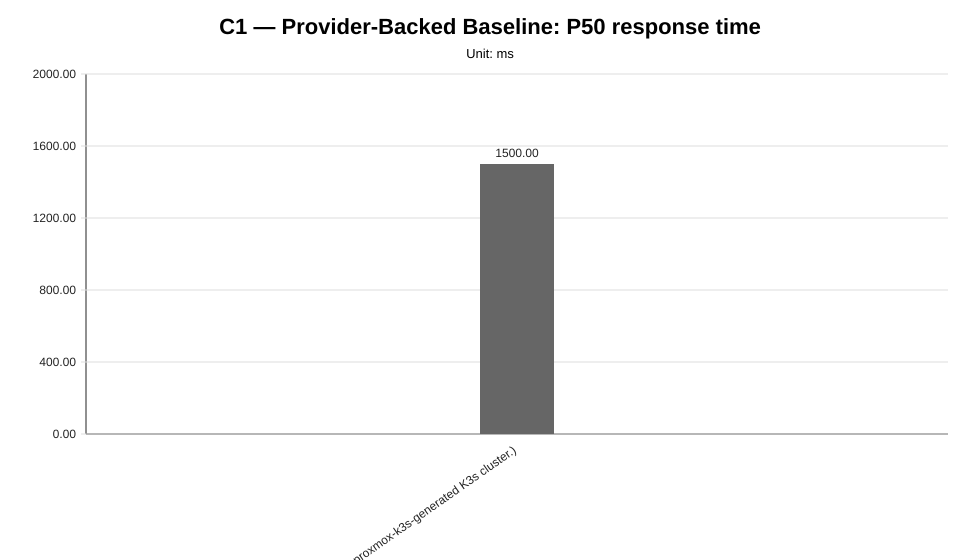
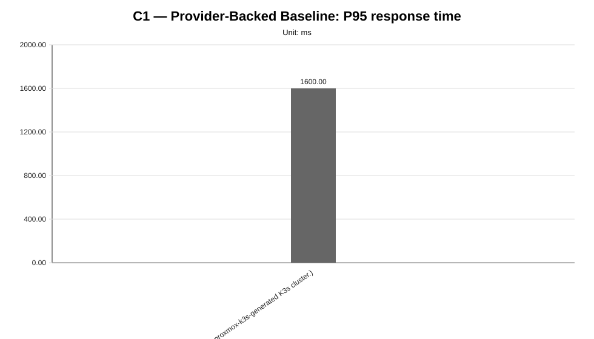
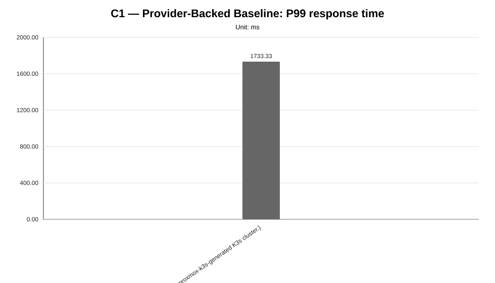
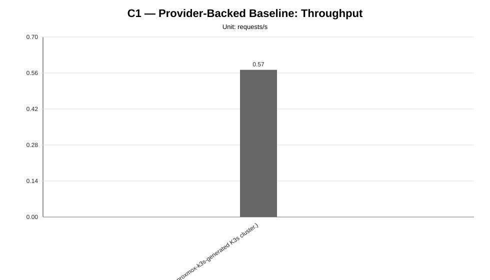
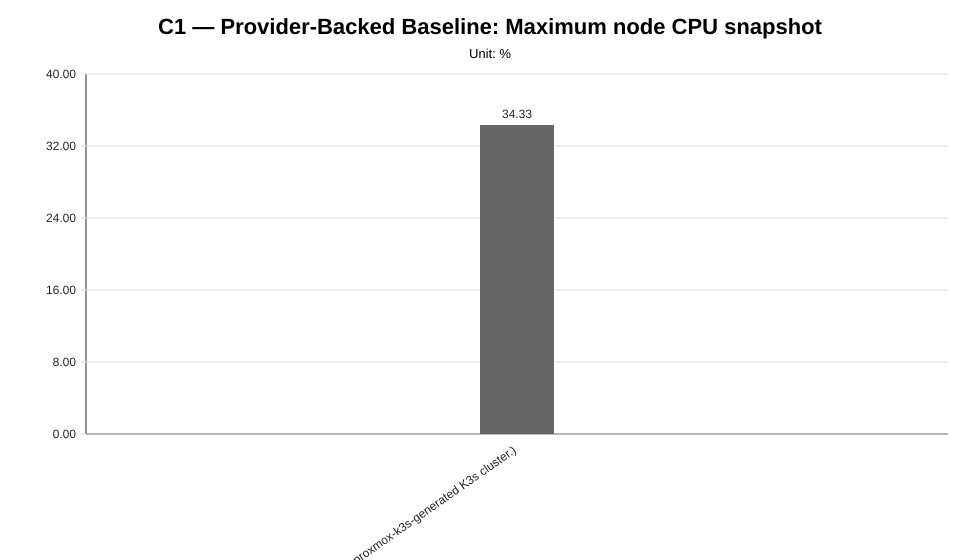
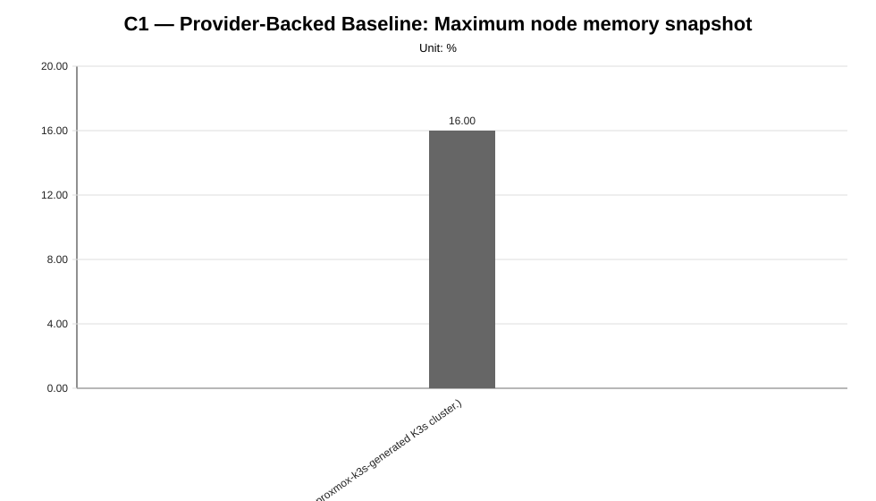
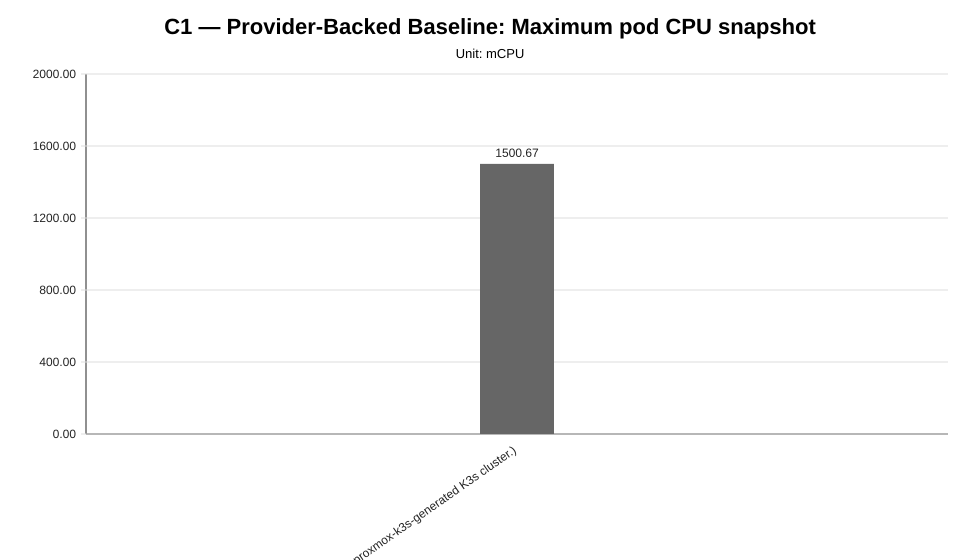
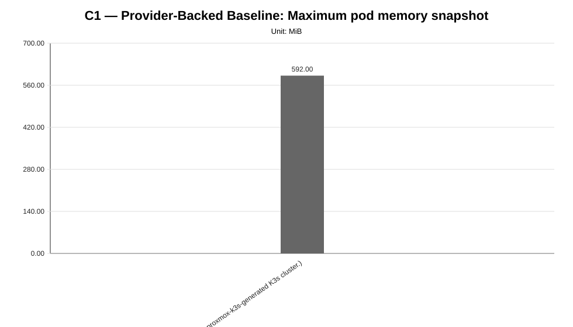

Cycle ID: C1
Reporting Profile: RP_C1_PROVIDER_BACKED_BASELINE
Reporting ID: REP_C1_20260619T174611Z
Generated at UTC: 2026-06-19T17:46:34Z
This report provides a cycle-scoped view of the provider-backed LocalAI worker-mode baseline. It combines infrastructure metadata, provider binding information, cluster validation evidence, LocalAI deployment topology, benchmark measurements, minimal observability metrics and diagnosis context so that the cycle can be reviewed without inspecting raw artifacts manually.
The report combines measurement CSV data, minimal observability evidence, cluster validation outputs, application topology metadata and technical diagnosis context when those artifacts are available.
The values below describe the global baseline configuration used as a cross-cycle reference. Scenario-specific and sweep-local sections report the effective infrastructure, placement, worker count and runtime configuration used by each scenario. Percentage deltas are computed against the family-local reference scenario when one is defined for the sweep.
| Dimension | Reference value |
|---|---|
| Baseline ID | B1 |
| Model | llama-3.2-1b-instruct:q4_k_m |
| Worker count | 2 |
| Placement | colocated_genai_pb_worker_02 |
| Workload | users=2, spawnRate=1, runTime=2m |
| Prompt | Reply with only READY. |
| Request timeout | 120 s |
| Infrastructure profile | INFRA_C1_1CP_2W_8C16G |
| Placement profile | PL_COLOCATED |
The scenarios below are the sweep-local references used to interpret percentage deltas within each family. They may differ from the cross-cycle baseline when a campaign intentionally varies infrastructure, placement, latency or tenancy.
| Sweep | Reference scenario | Description | Status | Varied dimension |
|---|---|---|---|---|
| Provider-Backed Baseline | B1 | B1 (Provider-backed baseline for LocalAI worker-mode characterization on a proxmox-k3s-generated K3s cluster.) | measured | provider-backed baseline validation |
| Layer | Primary use | Source |
|---|---|---|
| Measurement CSV | Quantitative charts and scenario summary metrics | {"baseline": "results/experimental-cycles/C1/benchmark/baseline", "worker-count": "results/experimental-cycles/C1/benchmark/consolidated/worker-count", "workload": "results/experimental-cycles/C1/benchmark/consolidated/workload", "models": "results/experimental-cycles/C1/benchmark/consolidated/models", "placement": "results/experimental-cycles/C1/benchmark/consolidated/placement"} |
| Technical diagnosis | Interpretation, family judgments, findings, unsupported-scenario context | results/experimental-cycles/C1/diagnosis/analysis_diagnosis_all_NA_20260619T174633Z_diagnosis.json |
| Scenario configuration | Fixed/varied dimensions and scenario labels | config/scenarios/** |
| Cluster-side artifacts | CPU/memory snapshots, pod placement and event evidence | minimal observability and cluster capture artifacts |
| Reporting output | Current generated report package | results/experimental-cycles/C1/reporting |
| Item | Value |
|---|---|
| Cycle ID | C1 |
| Baseline ID | B1 |
| Infrastructure profile | INFRA_C1_1CP_2W_8C16G |
| Provider | proxmox-k3s |
| Cluster name | genai-pb |
| Kubernetes distribution | K3s |
| K3s version | v1.35.3+k3s1 |
| Control-plane nodes | 1 |
| Worker nodes | 2 |
| Worker total vCPU | 16 |
| Worker total memory | 32 GiB |
| Lifecycle mode | reuse |
| Destroy after cycle | False |
| Item | Value |
|---|---|
| Provider binding | BINDING_INFRA_C1_1CP_2W_8C16G_PROXMOX_K3S |
| Provider ID | proxmox-k3s |
| Materialization mode | select_local_cluster_yaml |
| Example config | config/infrastructure/providers/proxmox-k3s/examples/cluster.c1-1cp-2w-8c16g.example.yaml |
| Local config | config/infrastructure/providers/proxmox-k3s/local/cluster.c1-1cp-2w-8c16g.local.yaml |
| Recommended kubeconfig | config/cluster-access/generated/proxmox-k3s/c1-1cp-2w-8c16g/kubeconfig |
| Real execution preference | localPath |
| Local config required for create/delete | True |
| Item | Value |
|---|---|
| Validation profile | CV_C1_PROVIDER_BACKED_BASELINE |
| Profile file | config/cluster-validation/profiles/CV_C1_PROVIDER_BACKED_BASELINE.json |
| Latest manifest | results/experimental-cycles/C1/infrastructure/validation/latest-cluster-validation-manifest.json (available) |
| Current status | validated |
| Latest raw validation | results/experimental-cycles/C1/infrastructure/validation/latest-validation.json (available) |
| Accepted provisioning statuses | completed |
| Required kubeconfig status | verified |
| Artifact root | results/experimental-cycles/C1/infrastructure/validation |
| Item | Value |
|---|---|
| Application deployment profile | AD_C1_PROVIDER_BACKED_BASELINE |
| Namespace | localai-benchmark |
| Model | llama-3.2-1b-instruct:q4_k_m |
| Worker count | 2 |
| Active RPC workers | localai-rpc-a, localai-rpc-b |
| Placement profile | PL_COLOCATED |
| Placement strategy | colocated |
| Kustomize targets | infra/k8s/compositions/foundation/namespace, infra/k8s/compositions/foundation/storage, infra/k8s/compositions/shared/rpc-workers-services, infra/k8s/compositions/server/models/m1-provider-backed, infra/k8s/compositions/topology/colocated-genai-pb-worker-02-w2 |
| Deployment manifest | results/experimental-cycles/C1/application/deployment/latest-localai-deployment-manifest.json (available) |
| Smoke result | results/experimental-cycles/C1/application/deployment/latest-smoke-result.json (available) |
The following table summarizes the currently available measurement and constraint evidence for all configured reporting families.
| Family | Scenario | Status | Samples | Mean ms | P95 ms | RPS | Unsupported evidence |
|---|---|---|---|---|---|---|---|
| baseline | B1 | measured | 3 | 1507.76 | 1600.00 | 0.5723 | NA |
The reporting generator first uses minimal observability metrics when available; missing values are filled from scenario-summary aggregates derived from benchmark CSV files and cluster-capture artifacts whenever possible. Values marked as not_available were not derivable from the available artifact set and are intentionally distinguished from measured zero values.
| Metric | Value | Source |
|---|---|---|
| request_count | 68 | scenario summary aggregation fallback |
| success_rate_percent | 100.0 | scenario summary aggregation fallback |
| failure_count | 0 | scenario summary aggregation fallback |
| mean_response_time_ms | 1507.757 | scenario summary aggregation fallback |
| p50_response_time_ms | 1500.0 | scenario summary aggregation fallback |
| p95_response_time_ms | 1600.0 | scenario summary aggregation fallback |
| p99_response_time_ms | 1733.3333 | scenario summary aggregation fallback |
| throughput_rps | 0.5723 | scenario summary aggregation fallback |
| max_node_cpu_percent | 35.0 | minimal observability cluster-side snapshot |
| max_node_memory_percent | 16.0 | minimal observability cluster-side snapshot |
| max_pod_cpu_millicores | 1547.0 | minimal observability cluster-side snapshot |
| max_pod_memory_mib | 592.0 | minimal observability cluster-side snapshot |
| pod_restart_count | 0 | minimal observability cluster-side snapshot |
| pending_pods_count | 0 | minimal observability cluster-side snapshot |
| failed_pods_count | 0 | minimal observability cluster-side snapshot |
| not_ready_pods_count | 0 | minimal observability cluster-side snapshot |
| kubernetes_events_count | 25 | minimal observability cluster-side snapshot |
| kubernetes_warning_events_count | 0 | minimal observability cluster-side snapshot |
| Family | Scenario | Status | Evidence | Source |
|---|---|---|---|---|
| all | NA | not_applicable | No unsupported or missing scenario evidence detected in the current reporting inputs. | NA |
| Family | Finding | Status | Confidence | Implication |
|---|---|---|---|---|
| baseline | The provider-backed baseline is measurable and ready for controlled comparisons. | provider_backed_baseline_available | high | Baseline evidence is available for the provider-backed cycle and can be used as the reference point for later resource, node-count and placement comparisons. |
| baseline | Minimum end-to-end validation is available as a functional reliability baseline. | NA | high | The benchmark pipeline starts from a verified functional baseline rather than from a purely theoretical setup. |
| baseline | The provider-backed baseline produced measurable request-level evidence. | NA | high | The provider-backed workflow is ready to act as the reference baseline for subsequent controlled comparisons. |
The global report below provides the stakeholder-facing overview. Each sweep also has a dedicated report for focused inspection of one varied dimension.
| Sweep | Dedicated HTML report | Execution status | Coverage | Varied dimension |
|---|---|---|---|---|
| Provider-Backed Baseline | baseline | fully_measured | measured=1, unsupported=0, missing=0 | provider-backed baseline validation |
| Family | Scenarios | Observed | Measured | Unsupported | Samples |
|---|---|---|---|---|---|
| baseline | 1 | 1 | 1 | 0 | 3 |
Execution status: fully_measured
Execution note: All configured scenarios in this sweep have measured benchmark samples.
Varied dimension: provider-backed baseline validation
Fixed dimensions: model, worker_count, placement, workload, infrastructure_profile, provider_binding.
Reference scenario within the sweep: B1
| Scenario count | Measured | Unsupported | Missing |
|---|---|---|---|
| 1 | 1 | 0 | 0 |
This table is derived from resolved scenario metadata. A parameter is marked as controlled only when it has the same effective value across all scenarios in the sweep.
| Parameter | Resolved value | Interpretation |
|---|---|---|
| Model | llama-3.2-1b-instruct:q4_k_m | controlled |
| Worker count | 2 | controlled |
| Placement | colocated_genai_pb_worker_02 | controlled |
| Workload | users=2, spawnRate=1, runTime=2m | controlled |
| Topology | infra/k8s/compositions/topology/colocated-genai-pb-worker-02-w2 | controlled |
| Server manifest | infra/k8s/compositions/server/models/m1-provider-backed | controlled |
| Prompt | Reply with only READY. | controlled |
| Temperature | 0.1 | controlled |
| Request timeout (s) | 120 | controlled |
| Scenario | Status | Varied value (provider-backed baseline validation) | Model | Worker count | Placement | Workload | Timeout (s) |
|---|---|---|---|---|---|---|---|
B1 | measured | B1 | llama-3.2-1b-instruct:q4_k_m | 2 | colocated_genai_pb_worker_02 | users=2, spawnRate=1, runTime=2m | 120 |
This compact table reports the core indicators used to read the sweep at a glance. Detailed percentiles, deltas and resource snapshots are reported in the following extended table.
| Scenario | Description | Status | Sample count | Mean response time (ms) | P95 response time (ms) | Throughput (requests/s) | Unsupported evidence |
|---|---|---|---|---|---|---|---|
B1 | B1 (Provider-backed baseline for LocalAI worker-mode characterization on a proxmox-k3s-generated K3s cluster.) | measured | 3 | 1507.76 | 1600.00 | 0.5723 |
This secondary table keeps the additional metrics aligned with the technical diagnosis while avoiding an excessively wide primary summary table.
| Scenario | P50 response time (ms) | P99 response time (ms) | Mean response time delta (%) | P95 response time delta (%) | Throughput delta (%) | Max node CPU snapshot (%) | Max node memory snapshot (%) | Max pod CPU snapshot (mCPU) | Max pod memory snapshot (MiB) |
|---|---|---|---|---|---|---|---|---|---|
B1 | 1500.00 | 1733.33 | 0.00 | 0.00 | 0.00 | 34.33 | 16.00 | 1500.67 | 592.00 |
provider_backed_baseline_available, confidence: high).high).high).







not_executed sweep means that neither measurement CSV files nor unsupported-scenario evidence were found for any configured scenario in that family.The report is generated from the current available artifacts and remains structurally complete even when some execution outputs are not yet present.
Quantitative charts use measurement CSV files when available; technical diagnosis and minimal observability are used as contextual evidence.
The report must identify the infrastructure profile and provider binding before comparing provider-backed cycles.
Unsupported scenarios are infrastructure or constraint observations and are not measured performance regressions.